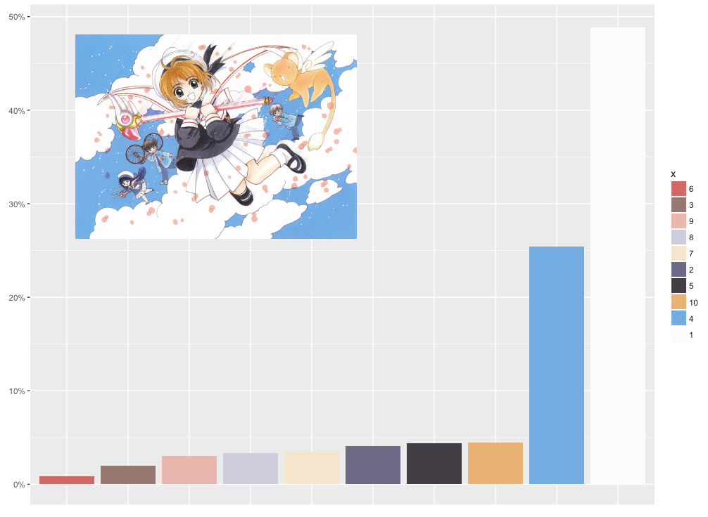

Yes, I know it's been 6 months since I finished up the April month, and yes, I know I'm supposed to do May before June. However, I'm still not quite sure about my angle for May and I did have an idea in mind for June 😅 I am starting to understand that the topics that I can get really enthusiastic about are a bit of a niche, that not many other people truly know it. I can only hope that for the people who are fans, as I am, this month will be a joy to explore. The topic that I've chosen for our month of fun is "Cardcaptor Sakura"!
A magic-girl manga (i.e. Japanese comic) from about 20 years ago. It was the first manga I owned, when manga was practically unknown in the Netherlands. I even had to travel all the way to the biggest city of our province to buy a new volume. I'm still dreadfully jealous of how perfect and cute practically each panel of the manga looks 😍 I almost chose this subject for our January Nostalgia month, but eventually went with Dragonball Z then. Nevertheless, after 20 years a new "arc" of Cardcaptor Sakura has started again recently. Therefore, while thinking of what to do for our fun month, I just couldn't shake the feeling of wanting to so something with Cardcaptor Sakura (CCS).
One of my favorite things about CCS is how beautiful the writers, CLAMP, make each page. Especially the covers of each chapter, which are tiny works of art (the image above is the cover for chapter 23). I therefore wanted to investigate the covers through data somehow. And I've never before done any kind of analysis based on image data. I therefore thought that creating a visualization that would abstract the colors of each cover into 3 - 8 colors would be fun and new for me.
There are 50 chapters in the original CCS manga, divided into two "arcs". I went through all of the 12 CCS volumes I have (each contains ±4 chapters) to see what image was on the cover (btw, you can also read CCS online, for example here). In my volumes the covers are printed in black and white. However, all of those chapter covers have since been published in several CCS art books. I therefore searched for and downloaded the corresponding color image from the CCS Wiki page.
Using the imager package in R, I loaded the images into R where each pixel was transformed into a multidimensional array of RGBA values. I converted that complex array into a more simple data frame of (number of pixels) * 3 (for r, g, and b value) size. To figure out which algorithm would cluster the pixel values into decent colors groups I tried several things. First, I tried different techniques: from the standard K-means, to hierarchical clustering and even tSNE. But I also converted the RGB values of each pixel into other color spaces (where colors have different "distances" to each other and can thus result into different cluster), using, amongst others, the colorspace package.
I often converted the results of each test into a bar chart such as below to see the color groups found. Eventually, I found that using Kmeans together with the colors converted to "Lab" gave, visually, results that I found most fitting
However, one of the tricky things with K-means is to figure out how many clusters should be used to create groups. I first tried a combination with hierarchical clustering, but eventually I decided to use something that was probably a better judge (but more time consuming), my own eyes! For each chapter I created a graph as below, that shows me the color distribution for 3 color clusters, up to 11 (I didn't want too many). I then compared the actual cover to these groups and chose the best fitting one, with the most distinct colors, and saved the hex colors and %s (the height of the bars) into a json.

To complement this data about the chapter covers, I also wanted to gather information about which characters were in each chapter and which "card" was captured in which chapter (CCS is about Sakura collecting so-called magical Clow cards). The CCS Wiki page on each chapter seemed like just the information resource I needed. But sadly, only the first 8 chapters contain information. Well, nothing else to do but to read all chapters again myself while slowly filling an Excel file with the info I needed 😜
Due to the "layered" visual result of this month, I eventually sliced and diced all of this information (who is in each chapter/cover image, totals per character/chapter, relations between characters, color distributions, and more) into about 7 separate small files throughout the creation process. I prefer to prepare all data beforehand in R. I find that the easiest and it doesn't clutter my JavaScript code.
{kind=link}
{kind=link}